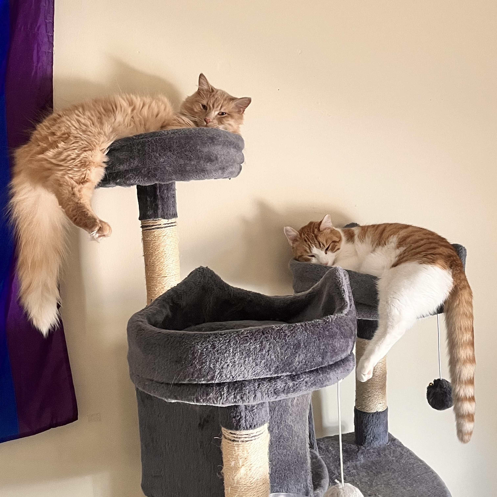

I am a member of the Cyber Security Club and the Alliance (oSTEM affiliate chapter)
I like hiking and spending time with my cats.

My two cats, Kali (left) and Bug (right)!
Experience
Working Experience
I spent two summers with VisualDx as a DevOps/Security intern, working on log
management and penetration
testing.
Educational Experience
Completed coursework: Distributed Computing Systems, Foundations of Computer
Science,
Database Systems I, Operating Systems, Social Implications of Information Processing,
Discrete Mathematics, Computer Networks, Machine Organization & Assembly,
Systems Programming, Object Oriented Design Concepts, Intro to Program Design
I have some experience with HTML, CSS, Java, JavaScript, Python, and unit
testing. I have very little
experience with Ruby.